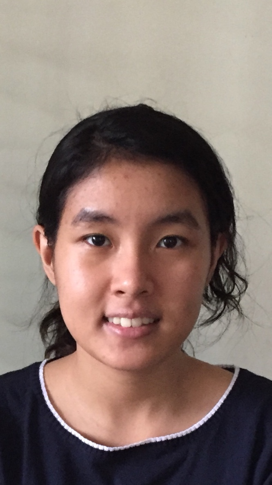

My name is Mya Myintzu Thant, I am a student studying at RMIT university. My student number is s3819438 and I am a memeber of the team RMIT Enthusiast. I was born and raised in the south east Asian country of Myanmar and recieved my education at ILBC a tertiary school where I leanred to speak English alongside my native language of Myanmar. Arriving in Australia I furthered my studies at Taylor's college and Sydeny University before attending RMIT universiry. My hobbies are reading Manga, watching movies and playing Video games. Recently I’ve bought a plant and has been taking care of it daily.
